地政学
ナイロビはケニアの首都で、東アフリカ共同体、国連機関、援助、治安、選挙政治が交差する内陸高地の中枢です。鉄道と空港が港湾都市モンバサや周辺国を結び、地域外交の実務が日常の道路に現れます。要衝です。

🇰🇪 ケニア / アフリカ / World City Atlas
内陸高地に広がるケニアの首都。国連機関、金融と通信、マタツ、非公式居住地、国立公園、宗教、食、観光が重なる東アフリカの中枢です。
都市の骨格
ナイロビは港を持たない内陸首都でありながら、空港、鉄道、幹線道路、通信、国際機関によって東アフリカを結びます。サファリの入口だけでなく、日々の通勤、商い、信仰、住宅の緊張が都市を形作ります。
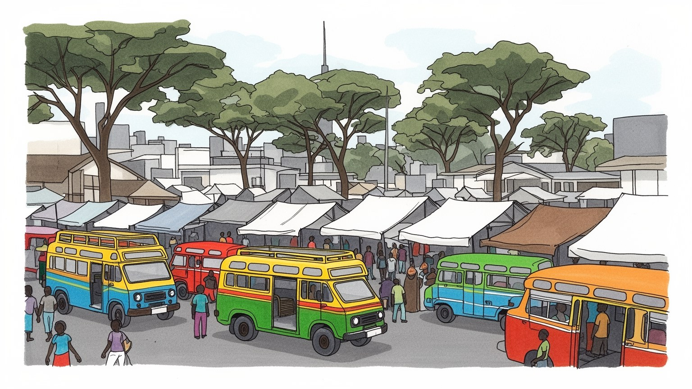
ナイロビはケニアの首都で、東アフリカ共同体、国連機関、援助、治安、選挙政治が交差する内陸高地の中枢です。鉄道と空港が港湾都市モンバサや周辺国を結び、地域外交の実務が日常の道路に現れます。要衝です。
行政、銀行、通信、フィンテック、物流、観光、教育、建設が雇用を広げます。だが公式経済の横にはマタツ運転手、露店、家事労働、警備、清掃があり、若者の仕事探しと住宅費が都市の緊張を作ります。課題です。
キリスト教会、モスク、民族言語、音楽、演劇、新聞、大学が都市文化を厚くします。キベラやイーストランドの生活、郊外の中産層、各地から来た移住者の食が混じり、国家の多様性が街路に表れます。文化です。日々
国立公園、博物館、カレン、ウェストランズ、市場は観光の入口ですが、住民には渋滞、水、家賃、治安、学校、医療が切実です。サファリの玄関口である前に、毎日の移動と商いで成り立つ生活都市です。課題も多い。
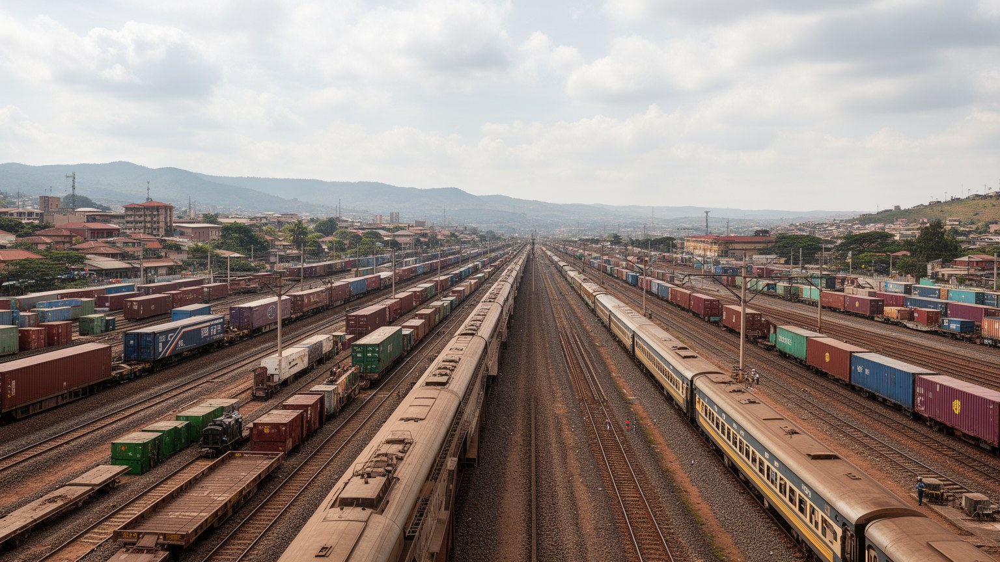
ナイロビはインド洋から離れた内陸高地にあり、標高の涼しさと鉄道の歴史が都市の性格を決めてきた。植民地期のウガンダ鉄道の停車地として始まり、現在もモンバサ港から内陸諸国へ伸びる物流の結節点である。市内には中央業務地区、工業地区、イーストランドの住宅地、キベラを含む非公式居住地、カレンやルンダの緑の多い郊外が並び、所得と土地利用の差がはっきり見える。ジョモ・ケニヤッタ国際空港は人と貨物を東アフリカへつなぎ、標準軌鉄道と幹線道路は港、農産地、周辺国市場を結ぶ。だが交通の成長は渋滞、排気、道路沿いの商い、歩行者の危険も生む。地理を読むと、ナイロビはサファリの入口だけではなく、港を持たない首都が空港、鉄道、道路を使って地域経済を束ねる都市だと分かる。雨季には排水の弱い地区が浸水し、乾季には水不足が生活を圧迫する。標高の涼しさは魅力だが、都市の広がりは水源林、河川、農地を削り、緑の都市という評判を試している。高地の谷筋は道路と住宅の伸び方を左右し、斜面に建つ住まいほど土砂、排水、通学の負担を受けやすい。都市圏がキアンブやカジアド方面へ広がるほど、通勤と土地投機は郡境を越え、首都の問題は周辺農村の地価や水利用にも及ぶ。そこでは新しい環状道路と古い徒歩の道が交差し、成長の速度が生活の距離を変えている。
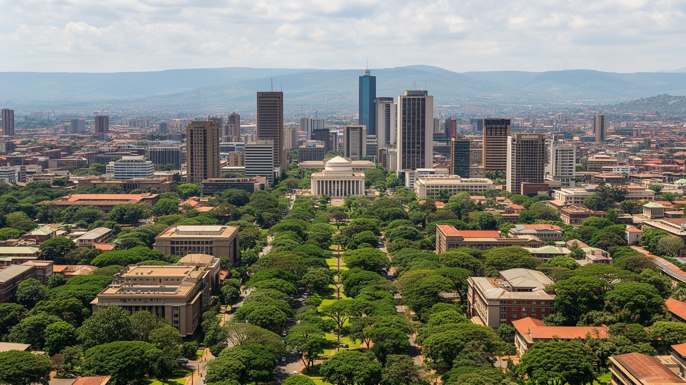
ナイロビはケニア政府の中枢であり、議会、大統領府、省庁、裁判所、政党、報道機関が都心に集まる。首都の政治は国内行政だけでなく、選挙、民族間の代表性、土地、治安、汚職、地方分権をめぐる議論と結びつく。さらに国連環境計画と国連ハビタットの本部が置かれ、多数の大使館、国際機関、援助団体、研究機関が活動するため、ナイロビはアフリカ外交の実務都市でもある。会議場やホテルでは気候、都市化、難民、食料安全保障、保健、平和構築が話し合われる一方、その議論の外では渋滞、住宅不足、失業が続く。首都機能は雇用と国際性を生むが、警備の強化、道路封鎖、地価上昇、中心部と周辺の距離も作る。街を歩くと、国家の権威、国際開発の言葉、日々の商売が近くで重なる。ナイロビを読むには、公式会議の都市と、公共サービスを求める住民の都市を同時に見る必要がある。政治的な緊張は選挙期だけの出来事ではなく、予算配分、警察、露店規制、交通計画の中にも表れる。地方から来た市民にとって首都は請願、裁判、就職、教育の場であり、国の機会が集まりすぎる場所でもある。国際機関の存在は都市を世界へ開くが、英語で語られる政策が、スワヒリ語や地域語で暮らす住民の日常へどう届くかが常に問われる。外交地区の整った景観と、中心部の混雑した歩道を往復すると、制度と生活の距離が見えてくる。
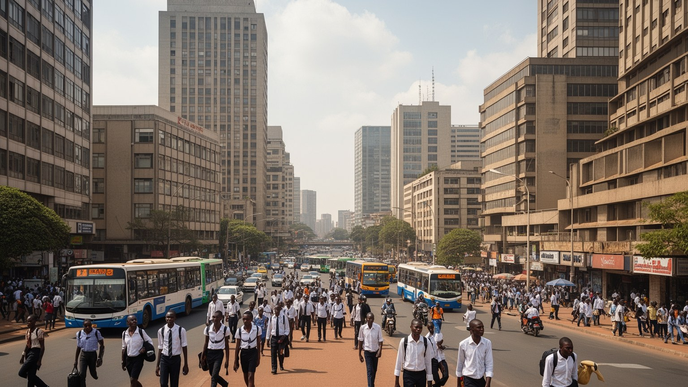
ナイロビの経済は行政首都にとどまらず、銀行、保険、通信、フィンテック、メディア、法律、教育、医療、物流を束ねる。モバイル送金とデジタル金融はケニアの都市生活を変え、小規模商店、タクシー、家族送金、公共料金の支払いまで携帯電話で結ばれるようになった。ウェストランズやアッパーヒルにはオフィス、ホテル、スタートアップ、国際企業が集まり、若い専門職が英語とスワヒリ語を使って地域市場へ働く。だが高度なサービス経済の横には、露店、マタツ、バイク配送、警備、清掃、家事労働、建設現場がある。公式統計に入りにくい仕事は都市の柔軟さを支える一方、収入の不安定さ、事故、社会保障の薄さを抱える。テック都市という評価だけでは、通信料を払いながら仕事を探す若者や、デジタル化で手数料を負う小商人の現実は見えない。ナイロビの強さは、制度化された金融と路上の商いが同じ都市でつながる点にある。その接続が公正に働くかどうかが、成長の質を決める。大学や職業訓練校は人材を供給するが、卒業後の雇用は十分ではなく、若者は配車アプリ、オンライン作業、家族経営、短期契約を組み合わせる。資金調達の言葉が華やかになるほど、家賃、通勤費、端末代、電力の不安定さを負う働き手の条件を見る必要がある。金融包摂は便利さを増やすが、借入の重さや個人情報の扱いも都市生活の新しいリスクになる。
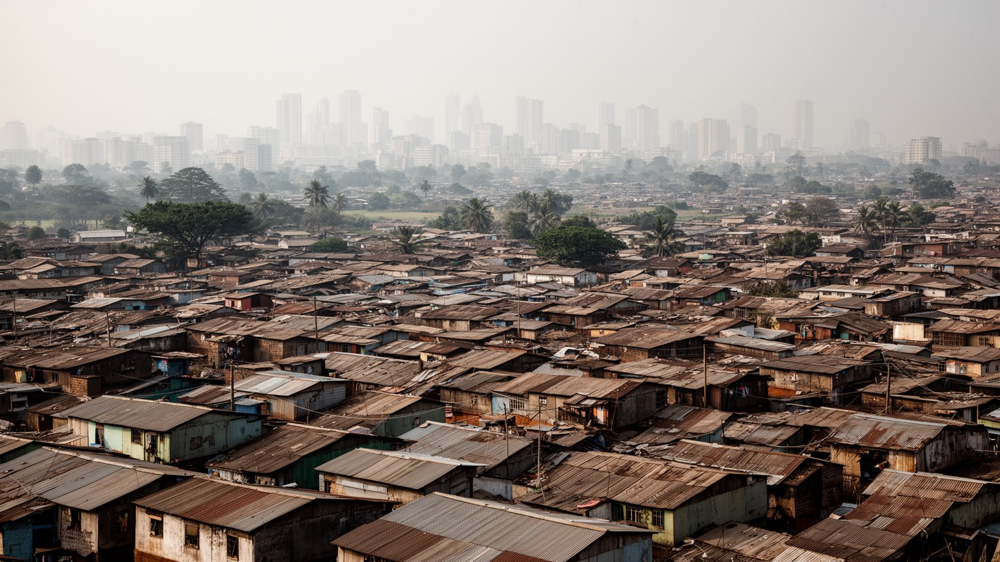
ナイロビの暮らしを理解するには、非公式居住地と非公式経済を都市の周縁ではなく中心的な仕組みとして見る必要がある。キベラ、マタレ、ムクルなどの地区には、過密な住まい、水とトイレの不足、火災、洪水、立ち退きの不安がある一方、食堂、仕立て、修理、学校、教会、貯蓄グループ、若者の仕事が密に存在する。住民は都心、工業地区、裕福な住宅地へ通い、清掃、警備、家事、調理、建設、販売、輸送を支える。都市の便利さは、低賃金で遠くから通う人に依存している。公的住宅やインフラ整備は必要だが、単に人を移すだけでは生活網を壊す。露店の場所、共同水栓、保育、夜間の安全、家賃、通勤費まで含めて考えなければ、改善は住民の負担になる。ナイロビの住宅問題は貧困の風景ではなく、土地制度、雇用、交通、公共投資が絡む都市全体の問題である。高層オフィスや郊外住宅の発展を評価する時も、その床を掃除し、食事を作り、警備する人がどこに住むのかを問う必要がある。非公式地区には行政の不在だけでなく、住民自身の組織力もある。水売り、住民委員会、女性の貯蓄組合、民間学校、診療所が不足を補うが、それは権利が保証されていることを意味しない。改善は住民を問題として扱うのではなく、都市を動かす担い手として扱うところから始まる。土地の不安定さが続く限り、家を直す投資も小さな店の将来も脆いまま残る。
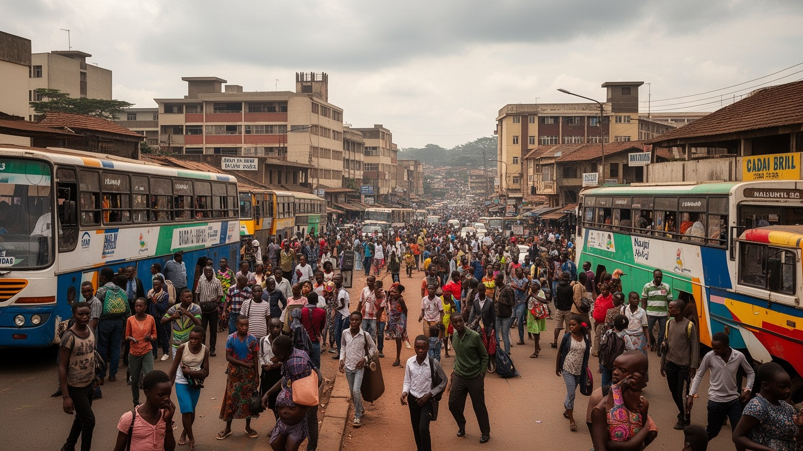
ナイロビの日常はマタツ、バス、バイクタクシー、徒歩、自家用車が作る複雑な移動に支えられる。マタツは単なる乗合交通ではなく、音楽、車体装飾、運転手と車掌の呼び込み、路線ごとの評判を持つ都市文化でもある。朝夕の渋滞は激しく、通勤時間は家族の食事、睡眠、学習、収入に影響する。新しい道路や高速道路は移動を速めるが、料金、歩道の分断、露店の移転、事故の危険を生むこともある。歩く人にとっては排水溝、横断歩道、街灯、警察の取り締まりが生活の安全を左右する。物流面では空港、内陸コンテナ、工業地区、卸売市場が結ばれ、食料、建材、輸入品が都市へ入る。交通を車の流れだけで見ると、移動の負担が誰に偏るかを見落とす。ナイロビの移動は、時間を売る労働者、道路沿いで稼ぐ商人、郊外から通う中産層、学校へ向かう子どもを同じ渋滞に置く。公共交通の改善は、環境対策であると同時に、都市の公平性を高める政策でもある。運賃が少し上がるだけで、低所得世帯は食費や学費を削ることがある。乗り換えの待ち時間、雨の日の泥、夜の治安、女性への嫌がらせも移動の一部である。道路整備の成功は平均速度だけでなく、歩く人と乗合交通の利用者が安全に帰れるかで測られる。移動時間を短くすることは、家族と休息の時間を取り戻す社会政策でもある。駅や停留所の周辺は、都市の小さな市場にもなる。
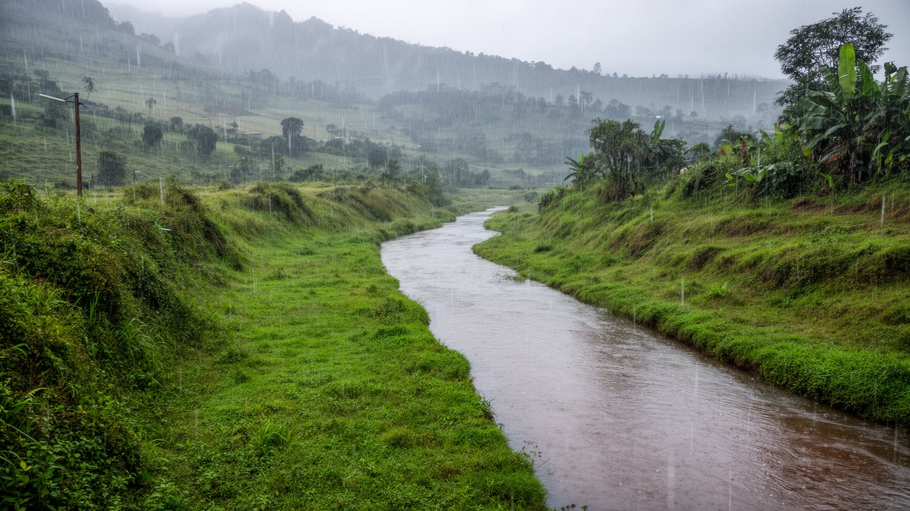
ナイロビの文化は、ケニア各地から集まる民族言語、スワヒリ語、英語、シェンと呼ばれる都市の若者言葉が交差する場所で育つ。新聞、ラジオ、テレビ、映画、コメディ、ヒップホップ、ゴスペル、ファッション、オンラインメディアは、政治批評と娯楽を混ぜながら都市の声を作る。国立博物館や劇場、大学は国家史を語る場であり、路上の音楽、クラブ、教会の合唱、サッカー観戦、食堂の会話は日常の文化を作る。移住者の多い首都では、ルオ、キクユ、カレンジン、ルヒヤ、ソマリ、インド系住民などの食、商い、宗教、家族関係が重なる。文化の活気は多様性から生まれるが、選挙政治や土地、仕事をめぐる競争が民族的な線を強めることもある。ナイロビの都市文化を読むには、公式の国民文化だけでなく、若者が混ぜて使う言葉、ミーム、音楽、教会、屋台、バスの装飾を見なければならない。そこに、国家の多様性を毎日調整する実践が現れる。都市の言葉は階層も映す。英語の会議、スワヒリ語の市場、シェンの冗談、母語の家庭会話は、同じ人の一日の中で切り替わる。言葉を切り替える力は機会を広げるが、学校や仕事で排除を生むこともある。文化は飾りではなく、誰が都市で声を持てるかを決める基盤である。舞台や画廊だけでなく、車内の音楽、壁のポスター、携帯動画の冗談にも、首都の批評精神が宿る。
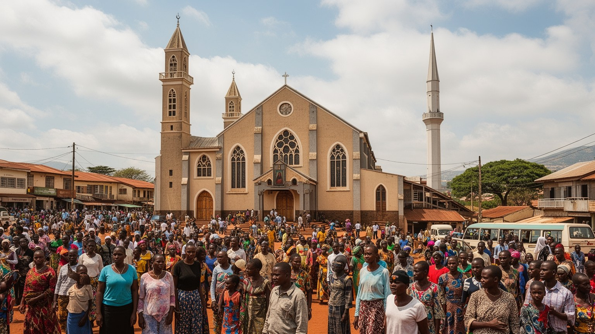
ナイロビではキリスト教会が日曜日の時間を大きく形作り、カトリック、プロテスタント、ペンテコステ派、独立教会が住宅地や非公式居住地に広がる。モスク、ヒンドゥー寺院、シーク寺院もあり、東アフリカ交易と移民の歴史を示す。宗教施設は祈りの場であると同時に、学校、診療、食料支援、就職紹介、若者活動、葬儀や結婚の相談先にもなる。急速に成長する都市では、親族から離れて暮らす人、失業する若者、単身で働く家事労働者、難民や移民にとって、教会やモスクは社会的な安全網になる。一方で、宗教的な影響力は政治動員、道徳をめぐる論争、ジェンダーや性的少数者の権利への圧力とも関係する。信仰を観光の背景としてではなく、都市で生きるための組織として見ると、ナイロビの共同体の厚みが見える。祈り、献金、合唱、食事、相互扶助は、公共サービスが届きにくい場所で生活を支える力になる。同時に、その支えだけに頼らず、行政の責任を問う視点も欠かせない。金曜の礼拝、日曜の礼拝、夜の祈祷会、結婚式、葬儀は交通や商いの時間も変える。宗教は内面の問題にとどまらず、都市の週ごとのリズム、倫理、助け合い、政治的発言を形作る。共同体の支えが強いほど、異なる信仰や生き方を尊重する制度も重要になる。祈りの場は慰めの場所であると同時に、都市の不平等を語り直す公共の場所でもある。
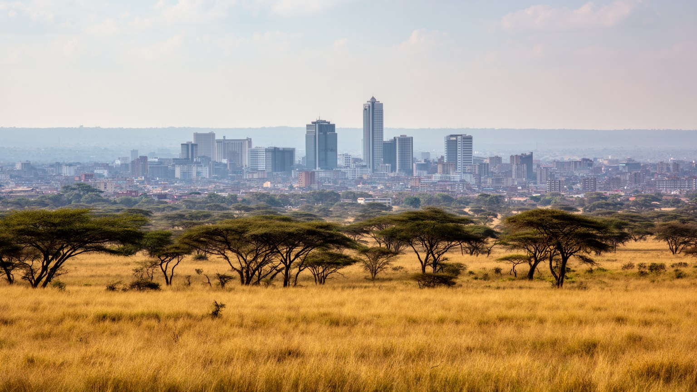
ナイロビの特異性は、大都市のすぐそばに国立公園が広がる点にある。草原、アカシア、野生動物の景観は観光の象徴であり、空港や都心から短時間でサファリへ向かえる都市は世界的にも珍しい。だがこの近さは、野生動物と都市化の緊張も意味する。住宅地、道路、鉄道、工業地、採石、フェンスは移動経路を狭め、公園の外側の土地利用を変える。観光客はライオンやキリンの姿に惹かれるが、周辺の牧畜民、保全団体、行政、開発業者は土地、補償、水、雇用をめぐって調整を続ける。ナイロビの自然は都市から切り離された保護区ではなく、成長する首都の境界に置かれた政治的な空間である。カレンやンゴング方面の緑地、カルラの森、都市河川も、休息と気候調整の役割を持つ。緑を守ることは美観の問題だけでなく、暑さ、洪水、空気、子どもの遊び場、観光収入を守ることでもある。自然と都市を対立させず、どの成長を許し、どの回廊を残すかを決めることが、ナイロビの未来を左右する。都市河川の汚染は、下流の生活と公園の生態系にも影響する。ごみ、下水、工場排水を減らす政策は、野生動物保護と住民の健康を同時に扱う課題である。自然を守る都市は、観光客のためだけでなく、住民が息をつける場所を守る都市でもある。公園の境界は、首都がどこまで広がるべきかを問い続ける線でもある。
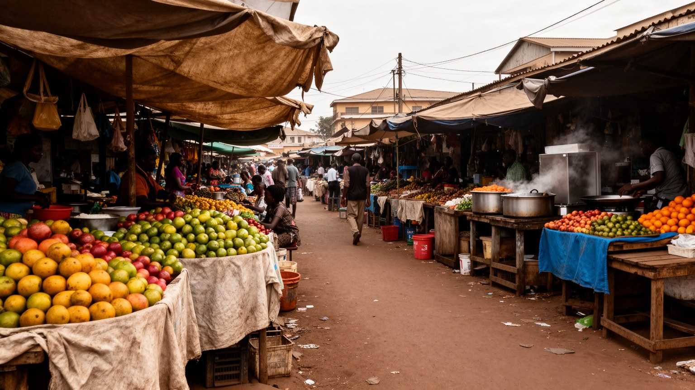
ナイロビの観光は国立公園や郊外の博物館だけでなく、食と市場を通じて日常へ入っていく。ニャマチョマ、ウガリ、スクマウィキ、豆料理、チャパティ、紅茶、コーヒー、インド系やソマリ系の料理、現代的なカフェは、移住者の歴史と都市の階層を映す。観光客はサファリの前後にカレン、ウェストランズ、中心部の博物館、市場、工芸店を巡るが、住民にとって食は物価、通勤、家族送金、昼食代の問題でもある。都市の外から届く野菜、肉、花、コーヒーは卸売市場、冷蔵、道路、露店を通じて消費される。観光レストランの華やかさの背後には、調理、清掃、警備、配送、農家の仕事がある。ナイロビの食を読むには、名物料理だけでなく、誰が安く腹を満たし、誰が国際的な店で消費し、誰が厨房で働くのかを見る必要がある。市場の匂い、教会帰りの食事、夜の焼き肉店、オフィス街の弁当は、都市の時間割を示す。観光は外からの視線を呼び込むが、食は住民の身体を毎日支える。コーヒーや花は輸出のイメージを持つ一方、都市の食料価格は燃料費、干ばつ、道路の状態に左右される。食をめぐる不安は家庭の予算を直撃し、外食の選択にも表れる。旅人が味わう一皿は、地域農業、都市労働、国際観光が交わる小さな地図である。市場で値段を聞く時間は、為替や気候より近い場所で都市経済を感じる時間でもある。
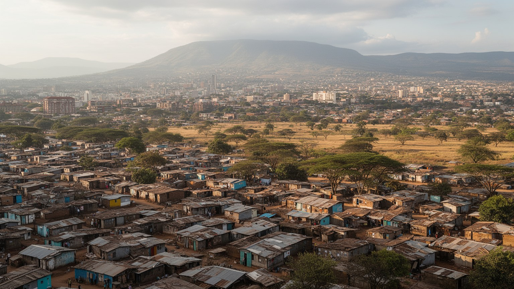
ナイロビは、東アフリカの政治、金融、通信、援助、交通、観光が集まる都市でありながら、生活の基盤は非常に不均等に配分されている。国連機関と高層オフィス、国立公園と高速道路、テック企業と露店、郊外の庭付き住宅と過密な非公式居住地が近距離に並ぶ。この近さが都市の力であり、同時に緊張である。経済成長は仕事と国際性をもたらすが、水、住宅、交通、安全、廃棄物、若者の雇用が追いつかなければ、都市の魅力は疲労へ変わる。ナイロビを読む鍵は、サファリの玄関口という外向きのイメージにとどまらず、毎朝の通勤、教会の合唱、マタツの車内、携帯送金、雨季の泥道、市場の値段を同じ地図に置くことだ。そこには、国家首都としての制度、地域都市としての接続、生活都市としての交渉が重なる。ナイロビの未来は、国際会議や投資だけでなく、低所得の住民が安全に住み、働き、移動できるかにかかっている。緑と野生動物を守りながら、住民の権利を広げられるかが、この高地都市の成熟を決める。都市の価値を測る時、GDPやホテルの数だけでなく、歩道、水道、学校、家賃、公共交通、若者の希望を同じ重さで扱う必要がある。ナイロビは完成した首都ではなく、成長の利益を誰に配るのかを毎日問われる都市である。その問いはケニアだけでなく、急速に都市化する多くのアフリカ都市に向けられている。